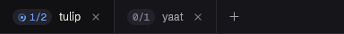

Where will the dragged tab land?
RT-231 (P5.3, tab strip drag): while a tab pill is dragged along the tab strip, how does the strip show the slot it will drop into? Three ways, each shown at two moments with the cursor over the "tests" pill. Every strip below is rebuilt in HTML from the client's own values (font, sizes, colours); only the top one is a real capture.
Before the drag the tabs run api · logs · main · tests · docs, with "main" shown. The user has picked up logs and is dragging it right, past "main", onto "tests".
Today (no drag)
The real tab strip from rt.ps1 native-shot main: "tulip" is the shown tab, "yaat" is not.
